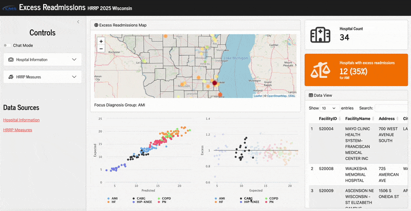

Working interfaceHospital Readmissions Explorer
A conversational interface for exploring public Hospital Readmissions Reduction Program data and making an analytical workflow easier to inspect.
Question
Concept
Prototype
Validation
Pilot
Production
Central question
Can a conversational interface make a complex public quality dataset easier to explore without hiding the analytical structure?
Current state
A working web-interface prototype can accept questions and return data-driven responses.
Latest update
A deployment pipeline and custom web interface were assembled for interactive HRRP exploration.
Next experiment
Clarify guardrails, evaluation criteria, and the questions the interface should and should not answer.
Known limits: This is an exploratory interface, not clinical decision support. No claims of validation, completeness, or production readiness are made.